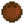

Imagen
Nombre
Ingredientes
Resultado
Precio de venta (resultado)
Minibomba
Mena de cobre (4) Carbón (1) Mena de cobre (4)data-sort-value="20"> 20o
Bomba
Mena de hierro (4) Carbón (1) Mena de hierro (4)data-sort-value="40"> 40o
Megabomba
Mena de oro (4) Esencia solar (1) Esencia sombría (1) Mena de oro (4)data-sort-value="100"> 100o
Puerta
Madera (10) Madera (10)data-sort-value="20"> 20o
Valla de madera
Madera (2) Madera (2)data-sort-value="4"> 4o
Valla de piedra
Piedra (2) Piedra (2)data-sort-value="4"> 4o
Valla de madera noble
Madera noble (1) Madera noble (1)data-sort-value="15"> 15o
Aspersor
Lingote de cobre (1) Lingote de hierro (1) Lingote de hierro (1)data-sort-value="120"> 120odata-sort-value="180"> 180oHerrero .
Aspersor de calidad
Lingote de hierro (1) Lingote de oro (1) Cuarzo refinado (1) Lingote de oro (1)data-sort-value="250"> 250odata-sort-value="375"> 375oHerrero .
Aspersor de iridio
Lingote de oro (1) Lingote de iridio (1) Pila (1) Lingote de iridio (1)data-sort-value="1000"> 1000odata-sort-value="1500"> 1500oHerrero .
Mayonesera
Madera (15) Piedra (15) Cristal terrestre (1) Lingote de cobre (1) Lingote de cobre (1)data-sort-value="60"> 60odata-sort-value="90"> 90oHerrero .
Colmena
Madera (40) Carbón (8) Lingote de hierro (1) Jarabe de arce (1) Jarabe de arce (1)data-sort-value="200"> 200odata-sort-value="250"> 250oResinador .
Envasadora
Madera (50) Piedra (40) Carbón (8) Carbón (8)data-sort-value="120"> 120o
Prensa de queso
Madera (45) Piedra (45) Madera noble (10) Lingote de cobre (1) Madera noble (10)data-sort-value="150"> 150o
Telar
Madera (60) Fibra vegetal (30) Brea de pino (1) Madera (60)Resinador : Brea de pino (1)data-sort-value="120"> 120odata-sort-value="125"> 125oResinador .
Barril
Madera (30) Lingote de cobre (1) Lingote de hierro (1) Resina de roble (1) Lingote de hierro (1)data-sort-value="120"> 120odata-sort-value="180"> 180oHerrero .
Aceitera
Baba (50) Madera noble (20) Lingote de oro (1) Madera noble (20)Herrero : Lingote de oro (1)data-sort-value="300"> 300odata-sort-value="375"> 375oHerrero .
Tonel
Madera (20) Madera noble (1) Madera (20)data-sort-value="40"> 40o
Fertilizante básico
Savia (2) Savia (2)data-sort-value="4"> 4o
Fertilizante deluxe
Savia (2) Cualquier Pez (1)
Savia (2)data-sort-value="4"> 4o
Fertilizante ultra-rápido
Mineral radiactivo (1) Fragmento de hueso (3) Esencia solar (1) Mineral radiactivo (1)data-sort-value="300"> 300o
Hidrogel básico
Piedra (2) Piedra (2)data-sort-value="4"> 4o
Suelo absorbente de lujo (2)
Piedra (5) Fibra vegetal (3) Arcilla (1) Arcilla (1)data-sort-value="20"> 20o
Fertilizante de árboles
Fibra vegetal (5) Piedra (5) Piedra (5)data-sort-value="10"> 10o
Semillas milenarias
Semilla milenaria (1) Semilla milenaria (1)data-sort-value="5"> 5o
Parche de hierba
Fibra vegetal (10) Fibra vegetal (10)data-sort-value="10"> 10o
Arbolito de té
Semillas silvestres (cualquiera) (2) Fibra vegetal (5) Madera (5) Madera (5)data-sort-value="10"> 10o
Suelo de madera
Madera (1) Madera (1)data-sort-value="2"> 2o
Suelo de tablones rústicos
Madera (1) Madera (1)data-sort-value="2"> 2o
Suelo de paja
Madera (1) Fibra vegetal (1) Madera (1)data-sort-value="2"> 2o
Suelo gastado
Madera (1) Madera (1)data-sort-value="2"> 2o
Suelo de piedra
Piedra (1) Piedra (1)data-sort-value="2"> 2o
Pasarela de piedra
Piedra (1) Piedra (1)data-sort-value="2"> 2o
Camino de madera
Madera (1) Madera (1)data-sort-value="2"> 2o
Camino de gravilla
Piedra (1) Piedra (1)data-sort-value="2"> 2o
Camino de guijarros
Piedra (1) Piedra (1)data-sort-value="2"> 2o
Camino de piedras
Piedra (1) Piedra (1)data-sort-value="2"> 2o
Girador
Lingote de hierro (2) Lingote de hierro (2)data-sort-value="240"> 240odata-sort-value="360"> 360oHerrero .
Corcho trampa
Lingote de cobre (1) Savia (10) Lingote de cobre (1)data-sort-value="60"> 60odata-sort-value="90"> 90oHerrero .
Corcho ligero
Madera (10) Madera noble (5) Baba (10) Madera noble (5)data-sort-value="75"> 75o
Corcho de calidad
Lingote de cobre (1) Savia (20) Esencia solar (5) Esencia solar (5)data-sort-value="200"> 200o
Cazatesoros
Lingote de oro (2) Lingote de oro (2)data-sort-value="500"> 500odata-sort-value="750"> 750oHerrero .
Girador disfrazado
Lingote de hierro (2) Tela (1) Tela (1)data-sort-value="470"> 470o
Anzuelo punzante
Lingote de cobre (1) Lingote de hierro (1) Lingote de oro (1) Lingote de oro (1)data-sort-value="250"> 250odata-sort-value="375"> 375oHerrero .
Trampa para cangrejos
Madera (40) Lingote de hierro (3)con la habilidad Trampero Madera (25) Lingote de cobre (2)
Lingote de cobre (2)data-sort-value="120"> 120o
Anillo de pedida
Nota: Esta receta solo esta disponible en Multijugador .
Lingote de iridio (5) Esquirla prismática (1) Lingote de iridio (5)data-sort-value="5000"> 5000odata-sort-value="7500"> 7500oHerrero .
Barrita campestre
Bellota (1) Semilla de arce (1) Piña (1) Bellota (1)data-sort-value="20"> 20o
Filete de insecto
Carne de insecto (10) Carne de insecto (10)data-sort-value="80"> 80o
Almizcle de monstruo
Ala de murciélago (30) Baba (30) Ala de murciélago (30)data-sort-value="450"> 450o
Polvo de hadas
Diamante (1) Rosa hada (1) Diamante (1)data-sort-value="750"> 750odata-sort-value="975"> 975oGemólogo .
Tótem de viaje: Playa
Madera noble (1) Coral (2) Fibra vegetal (10) Coral (2)data-sort-value="160"> 160o
Tótem de viaje: Montaña
Madera noble (1) Lingote de hierro (1) Piedra (25) Lingote de hierro (1)data-sort-value="120"> 120odata-sort-value="180"> 180oHerrero .
Tótem de viaje: Granja
Madera noble (1) Miel (1) Fibra vegetal (20) Miel (1)data-sort-value="100"> 100odata-sort-value="140"> 140oArtesano .
Tótem de teletransporte: Desierto
Madera noble (2) Coco (1) Mena de iridio (4) Mena de iridio (4)data-sort-value="400"> 400o
Totem de teletransporte: Isla
Madera noble (5) Diente de dragón (1) Jengibre (1) Diente de dragón (1)data-sort-value="500"> 500o
Tótem de lluvia
Madera noble (1) Aceite de trufa (1) Brea de pino (5) Aceite de trufa (1)data-sort-value="1065"> 1065odata-sort-value="1491"> 1491oArtesano .
Antorcha
Madera (1) Savia (2) Savia (2)data-sort-value="4"> 4o
Hoguera
Piedra (10) Madera (10) Fibra vegetal (10) Piedra (10)data-sort-value="20"> 20o
Brasero de madera
Madera (10) Carbón (1) Fibra vegetal (5) Madera (10)data-sort-value="20"> 20o
Brasero de piedra
Piedra (10) Carbón (1) Fibra vegetal (5) Piedra (10)data-sort-value="20"> 20o
Brasero de oro
Lingote de oro (1) Carbón (1) Fibra vegetal (5) Lingote de oro (1)data-sort-value="250"> 250odata-sort-value="375"> 375oHerrero .
Brasero esculpido
Madera noble (10) Carbón (1) Madera noble (10)data-sort-value="150"> 150o
Brasero de tocón
Madera noble (5) Carbón (1) Madera noble (5)data-sort-value="75"> 75o
Brasero de barril
Madera (50) Esencia solar (1) Carbón (1) Madera (50)data-sort-value="100"> 100o
Brasero de calavera
Fragmento de hueso (10) Fragmento de hueso (10)data-sort-value="120"> 120o
Brasero de mármol
Mármol (1) Aguamarina (1) Piedra (100) Piedra (100)data-sort-value="200"> 200o
Farola de madera
Madera (50) Pila (1) Pila (1)data-sort-value="500"> 500o
Farola de hierro
Lingote de hierro (1) Pila (1) Pila (1)data-sort-value="500"> 500o
Lámpara de calabaza
Calabaza (1) Antorcha (1) Calabaza (1)data-sort-value="320"> 320o
Horno de carbón
Madera (20) Lingote de cobre (2) Lingote de cobre (2)data-sort-value="120"> 120odata-sort-value="180"> 180oHerrero .
Cristalario
Piedra (99) Lingote de oro (5) Lingote de iridio (2) Pila (1) Lingote de iridio (2)data-sort-value="2000"> 2000odata-sort-value="3000"> 3000oHerrero .
Horno
Mena de cobre (20) Piedra (25) Mena de cobre (20)data-sort-value="100"> 100o
Pararrayos
Lingote de hierro (1) Cuarzo refinado (1) Ala de murciélago (5) Lingote de hierro (1)data-sort-value="120"> 120odata-sort-value="180"> 180oHerrero .
Panel solar
Cuarzo refinado (10) Lingote de hierro (5) Lingote de oro (5) Lingote de oro (5)data-sort-value="1250"> 1250odata-sort-value="1875"> 1875oHerrero .
Máquina recicladora
Madera (25) Piedra (25) Lingote de hierro (1) Lingote de hierro (1)data-sort-value="120"> 120odata-sort-value="180"> 180oHerrero .
Semilladora
Madera (25) Carbón (10) Lingote de oro (1) Lingote de oro (1)data-sort-value="250"> 250odata-sort-value="375"> 375oHerrero .
Incubadora de babas
Lingote de iridio (2) Baba (100) Lingote de iridio (2)data-sort-value="2000"> 2000odata-sort-value="3000"> 3000oHerrero .
Incubadora de avestruces
Fragmento de hueso (50) Madera noble (50) Fragmento de ceniza (20) Fragmento de ceniza (20)data-sort-value="1000"> 1000o
Prensa de babas
Carbón (25) Cuarzo de fuego (1) Pila (1) Pila (1)data-sort-value="500"> 500o
Resinera
Madera (40) Lingote de cobre (2) Lingote de cobre (2)data-sort-value="120"> 120odata-sort-value="180"> 180oHerrero .
Grifo pesado
Madera noble (30) Lingote radiactivo (1) Lingote radiactivo (1)data-sort-value="3000"> 3000o
Vivero de cebo
Madera noble (25) Lingote de oro (1) Lingote de hierro (1) Fibra vegetal (50) Madera noble (25)data-sort-value="375"> 375o
Molino de huesos
Fragmento de hueso (10) Arcilla (3) Piedra (20) Fragmento de hueso (10)data-sort-value="120"> 120o
Prensa de geodas
Lingote de oro (2) Piedra (50) Diamante (1) Diamante (1)data-sort-value="750"> 750odata-sort-value="975"> 975oHerrero .
Arreglo floral
Madera (15) Bulbo de tulipán (1) Semillas de allium (1) Semillas de amapola (1) Semillas de lentejuela (1) Semillas de amapola (1)data-sort-value="50"> 50o
Estatua maldita
Piedra (25) Carbón (5) Carbón (5)data-sort-value="75"> 75o
Bloque flauta
Madera (10) Mena de cobre (2) Fibra vegetal (20) Fibra vegetal (20)data-sort-value="20"> 20o
Bloque tambor
Piedra (10) Mena de cobre (2) Fibra vegetal (20) Fibra vegetal (20)data-sort-value="20"> 20o
Cofre
Madera (50) Madera (50)data-sort-value="100"> 100o
Cofre de piedra
Piedra (50) Piedra (50)data-sort-value="100"> 100o
Cartel de madera
Madera (25) Madera (25)data-sort-value="50"> 50o
Cartel de piedra
Piedra (25) Piedra (25)data-sort-value="50"> 50o
Señal oscura
Ala de murciélago (5) Fragmento de hueso (5) Ala de murciélago (5)data-sort-value="75"> 75o
Maceta
Arcilla (1) Piedra (10) Cuarzo refinado (1) Cuarzo refinado (1)data-sort-value="50"> 50o
Espantapájaros
Madera (50) Carbón (1) Fibra vegetal (20) Madera (50)data-sort-value="100"> 100o
Espantapájaros de lujo
Madera (50) Fibra vegetal (40) Mena de iridio (1) Madera (50)data-sort-value="100"> 100o
Escalera
Piedra (99) Piedra (99)data-sort-value="198"> 198o
Mini caja de música
Lingote de hierro (2) Pila (1) Pila (1)data-sort-value="500"> 500o
Mini obelisco
Madera noble (30) Esencia solar (20) Lingote de oro (3) Esencia solar (20)data-sort-value="800"> 800o
Ordenador de la granja
Dispositivo enano (1) Pila (1) Cuarzo refinado (10) Cuarzo refinado (10)data-sort-value="500"> 500o
Tolva
Madera noble (10) Lingote de iridio (1) Lingote radiactivo (1) Lingote radiactivo (1)data-sort-value="3000"> 3000o
Kit de cocina portátil
Madera (15) Fibra vegetal (10) Carbón (3) Carbón (3)data-sort-value="45"> 45o  500o.
500o. 500.
500. 10.
10.